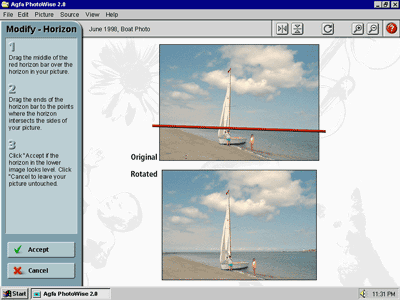

The Level Horizon tool grew out of the client’s request that we add a free rotate function “because the current version has it.”
Rather than simply creating a dialog with a numeric rotation field, we looked at the reasons that the user might want to rotate their picture. The primary one is to straighten a crooked image.
The difficulty with trying to level a picture by entering a numeric angle into a dialog is that there’s no way to determine the correct value except through trial and error. Even if the user can grab the image and rotate it “live,” they still have to decide when it’s level by eye.
The Level Horizon tool takes the opposite approach: instead of forcing the user to figure out how much to rotate the image, we let the computer handle it. The user simply drags a line across the image to indicate a part of the picture they know should be level. Typically this is the horizon line, but the edge of a window or someone’s eyes will work just as well.
Once the user has adjusted the horizon line, the application rotates the image just enough to make that line level. As long as the user picked an appropriate line in the image and placed the indicator over it, the image will now be perfectly level.
